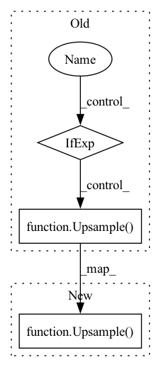

Pattern ID :23877

Before Change
dropout = vit_dropout
)
for ind, (dim_in, dim_out) in enumerate(reversed(in_out)):
is_last = ind == (len(in_out) - 1)
self.ups.append(nn.ModuleList([
resnet_block(dim_out + dim_in, dim_out, time_emb_dim = time_dim),
resnet_block(dim_out + dim_in, dim_out, time_emb_dim = time_dim),
LinearAttention(dim_out),
Upsample(dim_out, dim_in) if not is_last else nn.Conv2d(dim_out, dim_in, 3, padding = 1)
]))
default_out_dim = input_channels
After Change
is_last = ind == (len(in_out) - 1)
self.ups.append(nn.ModuleList([
Upsample(dim_out, dim_in, factor = factor),
resnet_block(dim_in * 2, dim_in, time_emb_dim = time_dim),
resnet_block(dim_in * 2, dim_in, time_emb_dim = time_dim),
LinearAttention(dim_in),
In pattern: SUPERPATTERN
Frequency: 3
Non-data size: 3
Instances
Fragment ID: 74399787
Project Name: lucidrains/denoising-diffusion-pytorch
Commit Name: 54557120880bb9adbea9f93a29a2c432b67991c1
Time: 2023-02-01
Author: lucidrains@gmail.com
File Name: denoising_diffusion_pytorch/simple_diffusion.py
M Class Name: UViT
N Class Name: UViT
M Method Name: __init__(17)
N Method Name: __init__(17)
M Parent Class: nn.Module
N Parent Class: nn.Module
M File Name: denoising_diffusion_pytorch/simple_diffusion.py
N File Name: denoising_diffusion_pytorch/simple_diffusion.py
M Start Line: 295
M End Line: 383
N Start Line: 309
N End Line: 409
'>
Before Change
])
ups = []
for ind in reversed(range(num_mults)):
is_last = (ind < 1)
use_attn = (channel_mults[ind] in attn_mults)
channel_mult = inner_channel * channel_mults[ind]
for _ in range(0, res_blocks+1):
ups.append(ResnetBlock(
pre_channel+feat_channels.pop(), channel_mult, time_emb_dim=time_dim))
if use_attn:
ups.append(SelfAttention(channel_mult))
pre_channel = channel_mult
ups.append(Upsample(pre_channel)
if not is_last else nn.Identity())
self.ups = nn.ModuleList(ups)
self.final_conv = Block(pre_channel, default(out_channel, in_channel))
After Change
pre_channel+feat_channels.pop(), channel_mult, time_emb_dim=time_dim, dropout=dropout, with_attn=use_attn))
pre_channel = channel_mult
if not is_last:
ups.append(Upsample(pre_channel))
now_res = now_res*2
self.ups = nn.ModuleList(ups)
'>
Fragment ID: 74399786
Project Name: janspiry/image-super-resolution-via-iterative-refinement
Commit Name: fc24c7b6bc55aaf8950b4a581247c844f5fe3ba9
Time: 2021-07-30
Author: jiangliangwei@tetras.com
File Name: model/unet.py
M Class Name: UNet
N Class Name: UNet
M Method Name: __init__(10)
N Method Name: __init__(9)
M Parent Class: nn.Module
N Parent Class: nn.Module
M File Name: model/unet.py
N File Name: model/unet.py
M Start Line: 173
M End Line: 210
N Start Line: 160
N End Line: 217
'>
Before Change
])
ups = []
for ind in reversed(range(num_mults)):
is_last = (ind < 1)
use_attn = (channel_mults[ind] in attn_mults)
channel_mult = inner_channel * channel_mults[ind]
for _ in range(0, res_blocks+1):
ups.append(ResnetBlock(
pre_channel+feat_channels.pop(), channel_mult, time_emb_dim=time_dim))
if use_attn:
ups.append(SelfAttention(channel_mult))
pre_channel = channel_mult
ups.append(Upsample(pre_channel)
if not is_last else nn.Identity())
self.ups = nn.ModuleList(ups)
self.final_conv = Block(pre_channel, default(out_channel, in_channel))
After Change
pre_channel+feat_channels.pop(), channel_mult, time_emb_dim=time_dim, dropout=dropout, with_attn=use_attn))
pre_channel = channel_mult
if not is_last:
ups.append(Upsample(pre_channel))
now_res = now_res*2
self.ups = nn.ModuleList(ups)
'>
Fragment ID: 74399785
Project Name: janspiry/image-super-resolution-via-iterative-refinement
Commit Name: ec021fdcb317782f6fffb553866d788504e96889
Time: 2021-07-30
Author: lw_jiang@foxmail.com
File Name: model/unet.py
M Class Name: UNet
N Class Name: UNet
M Method Name: __init__(10)
N Method Name: __init__(9)
M Parent Class: nn.Module
N Parent Class: nn.Module
M File Name: model/unet.py
N File Name: model/unet.py
M Start Line: 173
M End Line: 210
N Start Line: 160
N End Line: 217